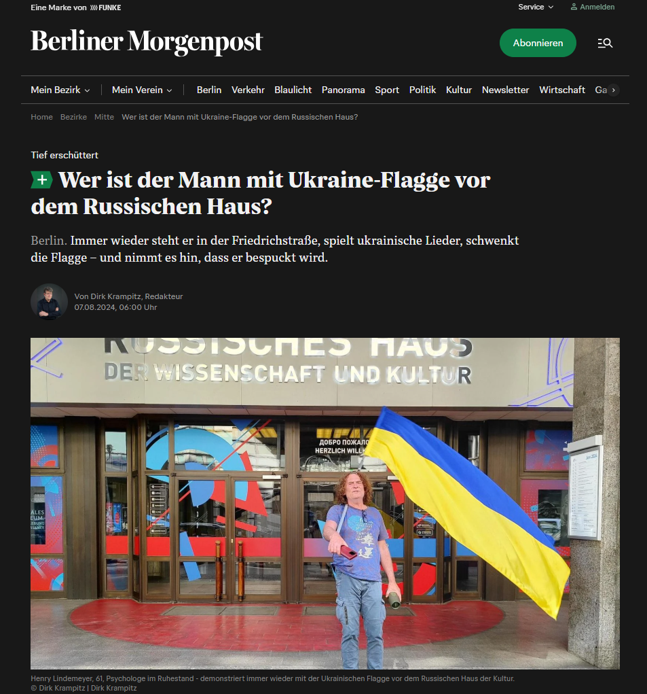

Die folgenden Auszüge geben die wesentlichen Inhalte des Artikels wieder. Der vollständige Originalartikel erschien in der jeweiligen Publikation.
Berlin. Immer wieder steht er in der Friedrichstraße, spielt ukrainische Lieder, schwenkt die Flagge – und nimmt es hin, dass er bespuckt wird.
Seit Monaten steht er immer wieder dort, spielt ukrainische Lieder wie den patriotischen Marsch „Oj, u lusi tscherwona kalyna“ über seine Bluetooth-Box ab – ausgerechnet vor dem Russischen Haus der Kultur in der Friedrichstraße in Berlin-Mitte. Wer die Berliner Einkaufsstraße entlang geht, sieht ihn immer wieder. Fast ist er mittlerweile eines jener Berliner Originale wie einst Helga Götze, die über Jahre vor der Gedächtniskirche stand. Es sind jene auffälligen Menschen, die man in Großstädten oft sieht, an denen man im Alltagstrubel oft vorbeigeht. Manchmal lohnt es sich, stehenzubleiben. Wie bei Henry Lindemeier. So heißt der Mann mit der Flagge.
Der 61-Jährige setzt sich irgendwie auch für Liebe ein. Denn er will den russischen Krieg gegen die Ukraine nicht in Vergessenheit geraten lassen. „Ich will ja gerade die Russen erreichen, deshalb stehe ich genau hier", sagt er. Und das klappt wohl auch oft, wenn auch nicht gerade auf liebevolle Weise. „Ich zähle schon nicht mehr, wie oft ich angespuckt werde“, sagt Lindemeier. „Es sind meist die Männer, die mir körperliche Gewalt androhen. Ihre Frauen halten sie zurück.“
„Ich möchte nicht, dass dieser Krieg gegen die Ukraine, der täglich Leben kostet, in Vergessenheit gerät und die Unterstützung für die Ukraine nachlässt.“
Lindemeier ist Psychologe im Vorruhestand, hat viel für Unternehmen gearbeitet. Nun widmet er einen Großteil seiner Zeit der ideellen Unterstützung der Ukraine – aber auch der ganz praktischen: Am Nachmittag nach dem Gespräch holt er einen Transporter ab, den er günstig bekommen hat. Er wird in die Ukraine an die Front gebracht.
Henry Lindemeier wurde durch den Angriff Russlands auf die Ukraine tief in seinem Menschsein erschüttert. Seine Reaktion: „Ich habe zuerst viel geweint und dann angefangen viel zu lesen, viel zu gucken.“ Seine Bewältigungsstrategie ist Verstehen statt Verdrängen.
Den Anstoß, aktiv zu werden, gaben die Feierlichkeiten zum Kriegsende am 8. und 9. Mai 2022, bei denen er das Gedenken an die Kapitulation der Nationalsozialisten durch die Russen missbraucht sah. Seitdem ist er mit seiner Fahne unterwegs. Er wird weitermachen. So viel steht fest.